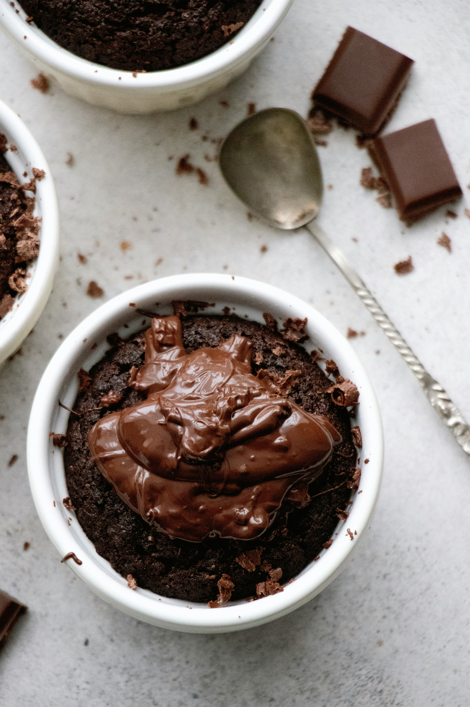

Chocolate lava mug cake

Description
Choco lava mug cake is an easy go to recipe with less cooking time .
A tasty and delightful dessert for when craving sweet.
A recipe that can me made with a very few ingredients......... so lets get started!!
Ingredients
- 2 tbsp all purpose flour
- 2 tbsp of white sugar powder
- 1 tbsp of cocoa powder
- dark chocolate or choco chips
- baking soda
- milk
- salt
Steps
- Take a cermaic Mug
- Add the flour, sugar powder, cocoa powder.
- Add a pinch of salt and baking soda.
- Mix all the dry ingredient well.
- Add milk spoon by spoon till it becomes a medium flowy texture.
- Microwave it for 2 minutes after pre heating.
- Ready to serve.
Home